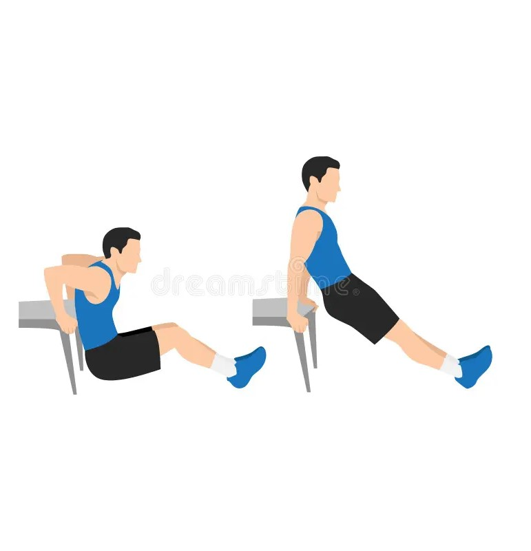

Exercise Description
Place your hands on a bench or dip bar with arms extended and legs bent or straight. Lower your body by bending your elbows until your upper arms are parallel to the floor, then push back up to the starting position. A good warm-up excercise.
Reps and Sets
Beginners: 3 sets of 15-20 reps
Rest time between each set: 45secs
Video Implementation